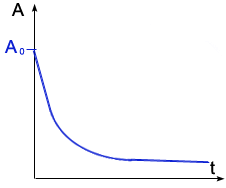
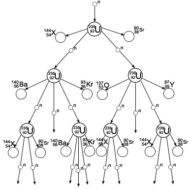
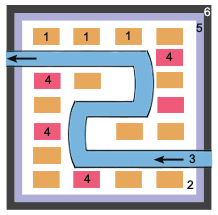

Właściwości jąder atomowych
Jądra atomowe składa się z nukleonów, tj. dwóch rodzajów cząstek: protonów i neutronów. Inna nazwa jądra atomowego to nuklid.
X - pierwiastek
Z - liczba atomowa (porządkowa) - liczba protonów w jądrze
A - liczba masowa - liczba protonów i neutronów w jądrze
|
Izotopy wodoru:
- prot
- deuter
- tryt
|
Np.: i
|
Np.: i
PROMIEŃ JĄDRA ATOMOWEGO
- promień jądra wodoru
A - liczba masowa
OBJĘTOŚĆ JĄDRA ATOMOWEGO
Objętość jądra atomowego jest wprost proporcjonalna do liczby masowej.
MASA JĄDRA ATOMOWEGO
Rzeczywista masa jądra atomowego nie jest równa sumie mas jego składników. Do wyznaczania rzeczywistych mas jądra atomowego służy spektrometr masowy.
Spektrometr masowy - instrument pozwalający na precyzyjny pomiar stosunku masy do ładunku (m/q) analizowanych substancji. Podstawowym rodzajem spektrometru masowego jest spektrometr statycznych skrzyżowanych pól elektrycznego i magnetycznego. Każdy spektrometr masowy składa się z pewnych niezbędnych podzespołów - układu wprowadzania próbki, źródła jonów, analizatora jonów, detektora jonów, analizy danych - niezależnych od typu instrumentu czy sposobu jego wykorzystania.
GĘSTOŚĆ JĄDRA ATOMOWEGO
Gęstość każdego jądra atomowego jest taka sama.
Niedobór masy. Energia wiązania
|
A - liczba masowa
Z - liczba atomowa
- masa protonu
- masa neutronu
Masę protonu i neutronu wyrażamy w atomowych jednostkach masy u:
Podczas łączenia nukleonów w jądro (lub lżejszych jąder w cięższe) pewna część masy zamienia się na energię.
Proces ten nazywamy syntezą termojądrową, a energia, na którą zamienia się część masy - energią wiązania.
Aby móc mówić o stabilności jądra atomowego, wprowadzono wielkość średniej energii wiązania:
Synteza termojądrowa
Przykłady:
(+4MeV)
(+3,2MeV)
(+22,3MeV)
Aby mogło dojść do syntezy jąder atomowych musimy tym jądrom nadać olbrzymie energie, aby mogły się do siebie zbliżyć, pokonując siłę elektrostatycznego odpychania. Taką energię jądra atomowe mogą uzyskać w bardzo wysokiej temperaturze (rzędu kilkunastu milionów kelwinów). W takiej temperaturze materia występuje w postaci całkowicie zjonizowanej. Nazywamy taki stan plazmą gorącą.
SIŁY JĄDROWE
Między nukleonami w jądrze atomowym działają siły jądrowe. Siły te są siłami przyciągania, są niezależne od ładunku i najsilniejsze ze wszystkich oddziaływań. Mają niewielki zasięg (10-15m).
Promieniowanie naturalne
W roku 1896 francuski uczony Becquerel odkrył, że minerały zawierające uran emitują niewidoczne dla oka promieniowanie, przenikające przez ciała nieprzezroczyste i działające na kliszę fotograficzną. Badania tego zjawiska prowadzone przez Marię Skłodowską-Curie i jej męża Piotra Curie doprowadziły do odkrycia nowych pierwiastków: polonu i radu, emitujących to promieniowanie i nazwanych pierwiastkami promieniotwórczymi lub radioaktywnymi.
Dalsze badania prowadzone głównie przez Rutherforda i Soddy'ego wykazały, że zjawisku promieniotwórczości towarzyszy powstawanie nowych pierwiastków, a więc jego istota polega na zmianach zachodzących w jądrach atomowych. Ponadto stwierdzono, że pierwiastki radioaktywne emitują trzy rodzaje promieniowania o różnej naturze, które nazwano promieniowaniem .
PROMIENIOWANIE
Większość jąder atomowych o liczbie Z>83 (A>209) emituje promieniowanie
- cząstka
Np.:
Właściwości promieniowania
- jest bardzo jonizujące
- bardzo słabo przenikalne
- zasięg w powietrzu rzędu kilku centymetrów
PROMIENIOWANIE
Wyróżniamy dwa rodzaje promieniowania
- rozpad
- jest mniej jonizujące niż promieniowanie

- lepiej przenikalne niż
- zasięg w powietrzu kilkumetrowy
- rozpad
- cząstka
- antyneutrino
Np.:
Oddziaływania słabe powodują, że w jądrze atomowym zachodzi przemiana:
Właściwości promieniowania
- neutrino
Np.:
Promieniowanie to strumień pozytonów.
ANIHILACJA - proces fizyczny, w którym para cząstka-antycząstka zamienia się w inne cząstki elementarne
PROMIENIOWANIE
Promieniowanie to promieniowanie elektromagnetyczne, emitowane przez wzbudzone jądro atomowe.
Właściwości tego promieniowania:
- ma największą częstotliwość
- ma najmniejszą zdolność jonizacyjną
- jest niebezpieczne
- duża zdolność do przenikania
- zasięg w powietrzu jest duży
Wpływ promieniowania jonizującego na organizmy
Szczególnym rodzajem promieniowania jest promieniowanie jonizujące. Wywołuje ono w obojętnych atomach i cząsteczkach materii zmiany w ładunkach elektrycznych, czyli jonizację. Promieniowanie jonizujące może mieć postać promieniowania korpuskularnego albo elektromagnetycznego. Promieniowanie jonizujące nie oddziałuje na nasze zmysły.
Wpływ promieniowania jonizującego na organizmy żywe jest w naturalny sposób związany z oddziaływaniem tego promieniowania na komórki żywe. Jeżeli promieniowanie dotrze do cząsteczek istotnych jako funkcje życiowe, jak np: cząsteczki DNA - uszkodzenie komórki będzie większe niż w przypadku, gdy będzie oddziaływało ono z mniej istotnymi cząsteczkami, jak np.: cząsteczki wody. Najbardziej podatne na wpływ promieniowania są te komórki, które szybko się rozmnażają Komórki mają jednak pewną zdolność do regenerowania uszkodzeń. Jednak, jeżeli komórka podzieli się zanim zdoła zregenerować swe uszkodzenie popromienne, nowe komórki mogą nie być identycznymi kopiami komórki wyjściowej. W kontakcie komórki żywej z promieniowaniem jonizującym możemy mieć do czynienia z różnymi efektami:
- Zniszczenie komórki jest tak duże, że nie będzie ona w stanie pełnić swoich dotychczasowych funkcji i umrze.
- Komórka -choć żywa - traci swą zdolność do reprodukcji.
Źródłami promieniowania wytworzonymi przez człowieka, a znajdującymi się w dużej bliskości użytkowników, są:
- zakłady produkujące i dystrybuujące izotopy
- akceleratory
- reaktory jądrowe
- defektoskopy i czujniki dymu zawierające źródła izotopowe
- aparaty rentgenowskie
- nieostrożny transport odpadów
- składowiska odpadów promieniotwórczych
- materiały budowlane uzyskane z popiołów elektrociepłowni
Źródła promieniowania dzieli się na:
- zamknięte - odznaczające się szczelną obudową uniemożliwiającą rozproszenie się materiałów promieniotwórczych
- otwarte - mogące emitować pyły, gazy, roztwory radionuklidów i ich związki
SKUTKI NAPROMIENIOWANIA
W zależności od dawki i rodzaju promieniowania, jego skutki mogą być mniej lub bardziej groźne dla zdrowia Podczas badań różnych skutków biologicznych napromieniowań stosowane są dwa podejścia: epidemiologiczne i eksperymenty na żywych komórkach. Poniższy wykaz odnosi się do dawek wchłoniętych jednorazowo przez równomierne napromieniowanie całego ciała. W takim wypadku l grej jest równoważny l siwertowi w przypadku promieniowania X, gamma i beta, oraz 25 siwertom w przypadku promieniowania aha. W radioterapii stosuje się na daną część ciała dawki skumulowane - znacznie przekraczające 5 grejów.
CHARAKTERYSTYCZNE WIELKOŚCI
Dawką promieniowania nazywamy stosunek energii pochłoniętej przez ciało do jego masy.
Gy, mGy - jednostki określające ilość przeniesionej energii przez promieniowanie do każdego kilograma materii przez którą przechodzi.
Równoważnik dawki jest wprost proporcjonalny do dawki promieniowania.
Q - współczynnik jakości promieniowania (1-20)
Detektory promieniowań jądrowych
Istnieje wiele detektorów promieniowań jądrowych, jednakże dwa spośród nich są najczęściej używane: komora Wilsona i licznik Geigera-Müllera.
Komora Wilsona, czyli przyrząd do wykrywania i obserwacji promieniowania, składa się z metalowego cylindra, wypełnionego nasyconą parą wodną, z przesuwanym wewnątrz niego szczelnym tłokiem oraz ze szklanej pokrywy umożliwiającej obserwację i fotografowanie oświetlonego wewnątrz cylindra. Działanie komory Wilsona jest oparte na właściwości skraplania się cząsteczek nasyconej pary wodnej wokół jonów, wytworzonych w wyniku promieniowania. W tym celu przesuwając szybko tłok do dołu powoduje się nagłe rozprężanie i oziębienie znajdującego się w komorze powietrza, a tym samym przesycenie zawartej pary wodnej. Promieniowanie jonizujące emitowane przez preparat promieniotwórczy wywołuje jonizację atomów gazu i zostawia ślady torów cząstek jonizujących w postaci jasnych smug kropelek wody na ciemnym tle. Ślad taki musi być natychmiast sfotografowany, gdyż po upływie krótkiego okresu czasu zanika.
Najbardziej rozpowszechnionym przyrządem służącym do liczenia cząstek promieniowania jest licznik Geigera-Müllera, który składa się z cienkościennej rurki miedzianej, połączonej z ujemnym biegunem źródła napięcia stałego oraz z włókna wolframowego umieszczonego wewnątrz rurki i połączonego biegunem dodatnim źródła. Rurka znajduje się w szczelnej obudowie szklanej zawierającej rozrzedzoną mieszaninę argonu i pary alkoholu. Ponieważ przestrzeń między włóknem a metalową rurką wypełnia gaz obojętny to obwód jest otwarty. Jeżeli jednak do wnętrza rurki wpadnie cząstka jonizująca lub foton promieniowania elektromagnetycznego, to nastąpi jonizacja cząsteczek gazu, a wybite z nich elektrony nabiorą w polu elektrycznym dużej prędkości i zderzając się z atomami spowodują jonizację lawinową. Ruch jonów i elektronów wywoła w rurce krótkotrwałe wyładowanie o dość znacznym natężeniu, które może być wzmocnione i zarejestrowane przez licznik mechaniczny lub elektroniczny.
Prawo rozpadu promieniotwórczego
|
- aktywność początkowa
e - podstawa logarytmu naturalnego

Powyższy wzór jest prawem rozpadu promieniotwórczego, gdzie:
- liczba jąder atomowych na początku
N - liczba jąder atomowych, która zostanie po upływie czasu t
Inną wielkość charakteryzującą jądra atomowe jest średni czas życia jąder .
Charakterystyczną wielkością dla rozpadu promieniotwórczego jest czas połowicznego rozpadu (zaniku) T:
Wzór ten można udowodnić, opierając się na własnościach funkcji wykładniczej i logarytmicznej:
Reakcje jądrowe
W 1911 roku Ernest Rutherford przeprowadził pierwszą reakcję jądrową.
|
W każdej reakcji jądrowej musi być zachowana:
- zasada zachowania liczby nukleonów
- zasada zachowania ładunku
- zasada zachowania pędu
- zasada zachowania energii
W 1930 roku włoski fizyk Enrico Fermi przeprowadził pierwszą reakcję łańcuchową.
Ogólny wzór:
|

|
REAKTOR JĄDROWY

1 - pręty paliwowe - materiał rozszczepialny
2 - moderator (ma spowalniać neutrony) - grafit lub tzw. ciężka woda
3 - kanał chłodzenia - ciekły sód lub woda
4 - pręty regulacyjne (z kadmu, pochłania neutrony - ma spowalniać lub przyspieszać reakcję)
5 - reflektor (odbija neutrony)
6 - betonowa osłona
Cząstki elementarne
Cząstki elementarne dzielimy na:
- leptony - nie mają żadnej wewnętrznej struktury, zaliczamy do nich:
- elektron i pozyton
- neutrino i antyneutrino
- mion i antymion
- neutrino mionowe i antyneutrino mionowe
- taon i antytaon
- neutrino taonowe i antyneutrino taonowe
- hadrony - są zbudowane z kwarków, dzielimy jej na:
- mezony - można podzielić na: piony i kaony
- bariony - dzielimy na: nukleony i hiperony
- nośniki oddziaływań (kwanty pól)
- fotony - oddziaływanie elektromagnetyczne
- gluony - oddziaływanie silne
- bozony - oddziaływanie słabe
- grawitony - oddziaływanie grawitacyjne
Wszystkim leptonom dopisujemy liczbę leptonową (-1,1). W reakcjach między cząstkami musi być zachowana zasada zachowania liczby leptonowej. Wszystkie leptony mają spin połówkowy (są fermionami).
Wszystkim barionom przypisuje się liczbę barionową (-1,1). W reakcjach między cząstkami musi być zachowana zasada zachowania liczby barionowej.
Kwarki
Za cząstkę elementarną w fizyce uważa się cząstkę, która zawsze zachowuje się jako niepodzielna całość. Jest to zatem taka cząstka, której nie możemy (w tej chwili) rozłożyć na elementy prostsze.
Fizycy stworzyli teorię, zwaną Modelem Standardowym, która opisuje materię oraz wszystkie siły we wszechświecie (z wyjątkiem grawitacji). Potrafi ona wyjaśnić skomplikowane procesy oraz budowę i własności setek cząstek przy pomocy kilku tylko cząstek elementarnych i oddziaływań pomiędzy nimi.
HISTORIA KWARKÓW
W roku 1964 Murray Gell-Mann i George Zweig zaproponowali, aby setki znanych w tych czasach cząstek przedstawić jako kombinacje tylko trzech elementarnych składników. Gell-Man wybrał dla nich dziwaczną nazwę "kwarki". To słowo pojawia się w zdaniu "three quarks for Muster Mark", z powieści Jamesa Joycea "Finnegan's Wake".
Rewolucyjną częścią ich pomysłu było to, że kwarkom przypisali ułamkowy ładunek elektryczny 2/3 i -1/3 (jednostką jest ładunek protonu): takie ładunki nigdy nie zostały zaobserwowane. Na początku teorie kwarków uważano za model matematyczny, ale eksperymenty przekonały wszystkich, ze kwarki rzeczywiście istnieją.
ZAPACHY KWARKÓW
Istnieje sześć zapachów kwarków - zapachy oznaczają tu po prostu różne rodzaje. Fizycy przeważnie mówią o trzech parach kwarków: górny/dolny (Up/Down), powabny/dziwny (Charm/Strange) i prawdziwy/piękny (True/Beauty lub Top/Bottom) - do każdego kwarku istnieje kwark z antymaterii, czyli antykwark.
- Dwa najlżejsze to górny i dolny.
- Trzeci kwark jest dziwny. Ta nazwa była już skojarzona z mezonem K, ponieważ jego długi czas życia wydawał się być dziwną i niespodziewaną właściwością (mezon K zawiera dziwny kwark).
- Powabny - czwarty kwark został tak nazwany dla kaprysu. Został odkryty w roku 1974 w Stanfbrd Linear Accelerator Center (Centrum Akceleratora Liniowego w Stanfbrd) w cząstce nazwanej T (psi) i jednocześnie w Brookhaven National Laboratory (Narodowe Laboratorium Brookhaven, w którym nazwano ją "J". Cząstka J/H1 jest kombinacją kwarków powabny-antypowabny (CC).
- Piąty i szósty kwark początkowo nazwane były prawdziwy i piękny (Truth and Beauty). Obecnie powszechnie są nazywane po angielsku Top oraz Bottom (szczytowy i denny). Kwark piękny w układzie piękny-antypiękny (bb) tworzy cząstkę zwaną Epsilon (T), która została po raz pierwszy zaobserwowana w Narodowym Instytucie im. Fermiego (Fermi National Laboratory) w roku 1977. 2 marca 1995 laboratorium Fermilab ogłosiło odkrycie kwarku prawdziwego (Top), ostatniego z sześciu kwarków przewidywanych przez teorie. Poszukiwania rozpoczęły się w roku 1977, kiedy fizycy odkryli piąty, piękny kwark, również w Fermilab. Zajęło to tak dużo czasu, ponieważ szósty kwark okazał się mieć dużo większą masę, niż pierwotnie przewidywano, dlatego tez potrzebowano dużo potężniejszego akceleratora cząstek, aby go wytworzyć. Pomimo ze kwark prawdziwy rozpada się zbyt szybko, aby zostać zaobserwowanym, pozostawia cząstki, które świadczą o jego istnieniu. Kwark ten może się rozpadać na więcej niż jeden sposób. Ponieważ szósty kwark pojawia się raz na miliardy zderzeń cząstek, koniecznym okazało się przeprowadzenie trylionów zderzeń. Fizycy wciąż nie mogą zrozumieć, dlaczego kwark ten jest taki ciężki. Jest on 40 razy bardziej masywny niż drugi najcięższy kwark oraz około 35000 razy cięższy niż kwarki górny i dolny, z których zbudowana jest większość otaczającej nas materii. W zasadzie ciągle pozostaje aktualne pytanie, dlaczego cokolwiek w ogóle ma masę. Fizycy wierzą, ze odkrycie szóstego kwarku pozwoli im wniknąć w te problemy.
ŁADUNEK KOLOROWY
Kwarki są nietypowe pod względem ładunku, gdyż posiadają ułamkowy ładunek elektryczny 2/3 albo -1/3, w przeciwieństwie do elektronu (ładunek -1) czy protonu (ładunek +1). Kwarki posiadają jeszcze inny rodzaj ładunku.
Okazuje się, że niektóre cząstki (kwarki i gluony) mają ładunek, który nie jest ładunkiem elektromagnetycznym. Ten ładunek nazywany jest ładunkiem kolorowym. Oddziaływanie pomiędzy kolorowo naładowanymi cząstkami jest bardzo silne i stąd nazwa oddziaływania silnego. Siła ta łączy kwarki w hadrony, jej cząstki pośredniczące są nazywane gluonami, ponieważ "sklejają" (ang. glue - klej) kwarki. Główną różnicą pomiędzy oddziaływaniami elektromagnetycznymi i silnymi jest to, że cząstki przenoszące silne oddziaływania (gluony) same niosą ładunek kolorowy. Fotony natomiast nie niosą ładunku.
Dwa lub więcej kwarków blisko siebie szybko wymienia gluony tworząc bardzo silne "pole kolorowe" łączące kwarki. Istnieją trzy kolorowe ładunki i trzy odpowiednie antykolorowe ładunki. Kwarki ciągle zmieniają swój kolor podczas wymiany gluonów z innymi kwarkami.
Każdy kwark ma jeden z trzech kolorowych ładunków i każdy antykwark ma jeden z trzech antykolorowych ładunków. Gluony przenoszą pary ładunków kolor/antykolor (nie koniecznie tego samego rodzaju; np. są gluony niosące ładunek czerwony/antyniebieski). Mamy 9 kombinacji par kolor/antykolor, ale jedna z nich jest wyeliminowana ze względu na symetrię. Gluon może nieść jedną z ośmiu możliwych kombinacji kolor/antykolor.
Należy zauważyć, że tylko kwarki i gluony maja kolorowy ładunek Hadrony (jak proton czy neutron) są kolorowo neutralne. Podobnie leptony. Z tego powodu siła ta działa tylko na małych odległościach pomiędzy kwarkami.
UWIĘZIENIE KWARKÓW
Kolorowo naładowane cząstki nie występują pojedynczo. Z tego powodu naładowane kolorowo kwarki są uwięzione w grupach (hadrony) z innymi kwarkami. Te grupy są kolorowo neutralne.
Dopóki nie opracowano teorii silnych oddziaływań w Modelu Standartowym fizycy nie mogli wyjaśnić, dlaczego kwarki wiążą się tylko w bariony (obiekty złożone z trzech kwarków) i mezony (obiekty złożone z układu kwark-antykwark), a nie na przykład w cząstki złożone z czterech kwarków. Teraz wiemy, że tylko takie obiekty są kolorowo neutralne.
Kolorowy ładunek jest zawsze zachowany. Stąd, kiedy kwark emituje lub absorbuje gluon, kolor kwarku musi zmieniać się w ten sposób, by zachować ładunek kolorowy. Np. rozważmy "czerwony" kwark, który zmienia się na "niebieski" kwark i emituje "czerwony/antyniebieski" gluon. Całkowity kolor jest ciągle czerwony.
Kwarki wewnątrz hadronu bardzo często absorbują i emitują gluony. Stąd nie można zaobserwować koloru poszczególnych kwarków. Wewnątrz hadronu kolor dwóch kwarków wymieniających gluon będzie się zmieniał w ten sposób, by utrzymać cały układ w stanie kolorowo neutralnym.
POLE SIŁ KOLOROWYCH
Kwarki w danym hadronie bardzo szybko wymieniają gluony. Z tego powodu fizycy mówią o polu sił kolorowych, które składa się z gluonów łączących razem kwarki. Jeżeli jeden z kwarków w danym hadronie zostaje odepchnięty od swoich sąsiadów, pole sił kolorowych naciąga się pomiędzy oddalonym kwarkiem i resztą kwarków. Jeżeli kwark ciągle by się oddalał pole staje się coraz silniejsze. W pewnym momencie energetycznie taniej dla rozciągniętego pola staje się jest wytworzyć nową parę kwarków. Energia w takim przypadku jest zachowana, ponieważ energia pola kolorowego jest zamieniana na masę powstałej pary kwarków i pole sił kolorowych może wrócić do "nienaciągniętego stanu".
RODZAJE HADRONÓW
- Bariony
- Mezony
Bariony są to hadrony zbudowane z trzech kwarków. Na przykład protony zbudowane są z dwóch kwarków górnych i jednego dolnego (uud):
Neutrony składają się z jednego kwarku górnego i dwóch dolnych (udd):
Dla każdego barionu istnieje barion z antymaterii (antybarion), zbudowany z trzech odpowiednich antykwarków.
Mezony zbudowane są z kwarku, i antykwarku, oraz wiążących je gluonów. Przykładem może być pion o ładunku + l (n+), składający się z kwarku górnego (up) i antykwarku dolnego (anti-down). Antycząstką dla mezonu jest mezon zbudowany z kwarków, które są antykwarkami dla kwarków pierwotnego mezonu. Na przykład antycząstką dla n+ jest TT, która składa się z kwarku dolnego (down) i antykwarku górnego (anti-up). Mezony nie posiadają ładunku kolorowego, ponieważ składające się na nie kwark i antykwark mają przeciwne ładunki kolorowe. Dlatego mezony mogą występować samodzielnie. Wszystkie mezony są niestabilne.